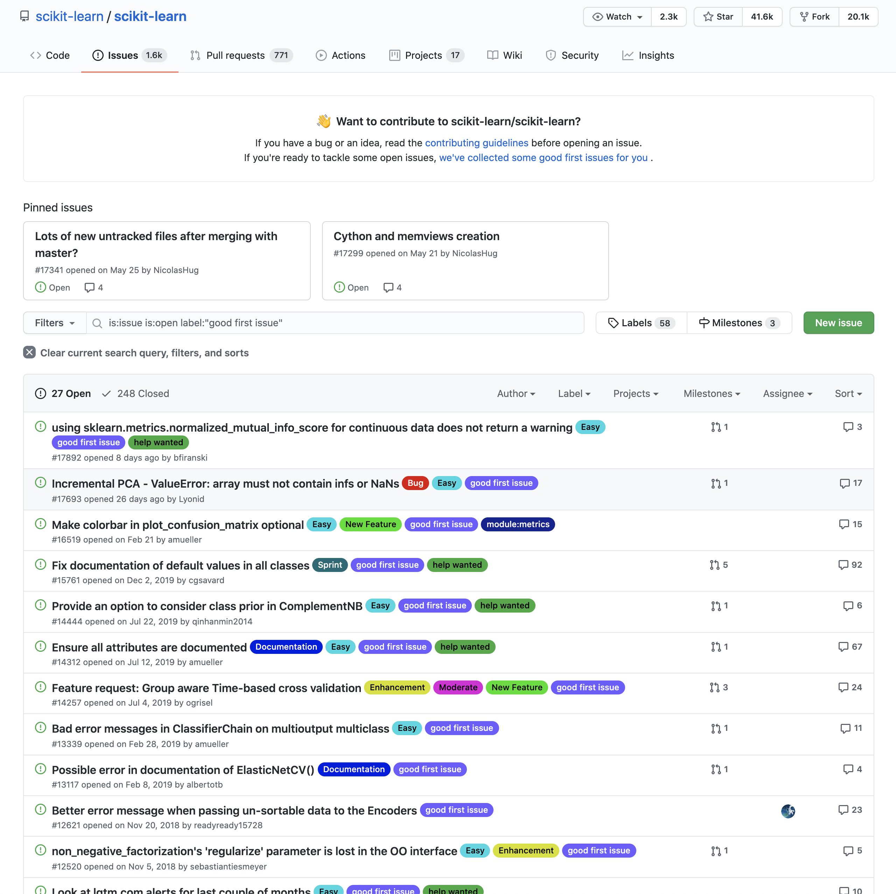

O que é o GitHub?
O GitHub é um serviço na nuvem, gratuito (com planos mais avançados que são pagos), que te permite enviar seus repositórios e alterações do Git.
Existem alternativas ao GitHub que é o caso do GitLab e também o BitBucket, ou próprias empresas criam servidores pra hospedarem repositórios do Git.

Open Source & Explorando Repositórios
Open Source nada mais é que códigos fontes (source) abertos, ou seja, atribuímos níveis de licenças em código para permitir que outras pessoas possam utilizar esse código. Não só utilizar, mas também colaborar.
Você consegue imaginar um repositório open source com 100 colaboradores sem uma ferramenta de controle de versão, como o Git?
O GitHub cresceu muito, pois tem muitos repositórios de código livre onde as pessoas colaboram e reutilizam código.
Por exemplo, se você quiser ver projetos relacionados a Machine Learning, você pode explorar esse tópico:
Não só isso, mas você também pode filtrar pela linguagem desejada, número de favoritos (stars) etc. Link da página acima: https://github.com/topics/machine-learning?l=python.
Good First Issues
Se você se interessar por colaborar em um projeto, procure pelas labels "Good First Issue" que significa que o problema é bom para qualquer iniciante no repositório. Exemplo de "good first issues" do repositório scikit-learn (um módulo de python pra machine learning): https://github.com/scikit-learn/scikit-learn/issues?q=is%3Aissue+is%3Aopen+label%3A%22good+first+issue%22
Perfil no GitHub
Colaborar em projetos open source é uma ótima forma de iniciar na carreira de programação (ou até mesmo reciclar, aprender novas tecnologias etc.).

Além disso, isso fortalecerá bastante seu perfil, te dando maiores chances no mercado de trabalho.
Pense em começar a colocar TODOS os seus códigos no GitHub, mesmo que no privado, pois assim você consegue manter um perfil de um desenvolvedor ativo e engajado.